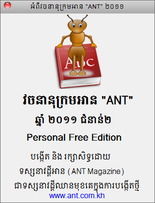

- វគ្គជំនាញកុំព្យូទ័របើកថ្មី
- សូមទូរសព្ទមក 010 666653
- វគ្គបើកថ្មី
- HTML + HTML 5 + Dreamwaver
- ០១ វិច្ឆិកា (ច័ន្ទ - សុក្រ ១០:៣០ ១២:០០)
- PHP and MySQL
- ០១ វិច្ឆិកា (ច័ន្ទ - សុក្រ ១០:៣០ ១២:០០)
 Drupal 7.15 កម្មវិធីកុំព្យូទ័រ | ព្រហស្បតិ៍, ១១ តុលា ២០១២
Drupal 7.15 កម្មវិធីកុំព្យូទ័រ | ព្រហស្បតិ៍, ១១ តុលា ២០១២
Drupal គីជាប្រភេទនៃ open source content management platform ដែលអនុញ្ញាតអោយយើងអាចរៀបចំ, គ្រប់គ្រង និង ប្រើប្រាស់សម្រាប់បង្កើត web site បានដែលមានសោភ័ណភាព និងដោយងាយស្រួល។

បង្កើតនិងគ្រប់គ្រងដោយ អាន "ANT" ២០១២